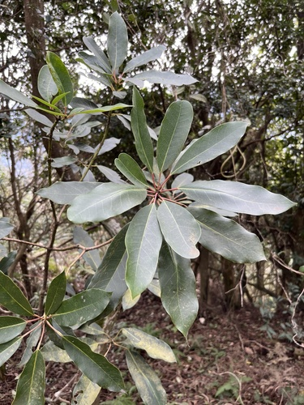

Daphniphyllaceae
Daphniphyllum Family
Daphniphyllaceae is a small family of evergreen trees and shrubs comprising the single genus Daphniphyllum. Native to East and Southeast Asia and the Indian subcontinent, these plants are characterized by their simple, alternate leaves often clustered at branch tips, inconspicuous unisexual flowers lacking petals (apetalous), and small drupe fruits. The family belongs to the order Saxifragales.
Overview
The Daphniphyllaceae family contains only the genus Daphniphyllum, with somewhere between 10 and 30 species (species boundaries can be difficult to define). These plants are found in temperate and tropical forests of East Asia (China, Japan, Korea), Southeast Asia, Malesia, and the Indian subcontinent.
They are recognized by their evergreen nature, simple alternate leaves that often cluster tightly at the ends of branches (appearing pseudo-whorled), lack of stipules, and dioecious condition (separate male and female plants). The flowers are highly reduced, lacking petals and often having only inconspicuous sepals (or none). Male flowers consist primarily of stamens, while female flowers have a superior ovary that develops into a small, dark drupe. Phylogenetically, Daphniphyllaceae is placed within the diverse order Saxifragales.
Some species are cultivated as ornamentals for their attractive evergreen foliage, particularly in milder climates.
Quick Facts
- Scientific Name: Daphniphyllaceae Müll.Arg.
- Common Name: Daphniphyllum Family
- Number of Genera: 1 (Daphniphyllum)
- Number of Species: Approximately 10-30
- Distribution: East Asia, Southeast Asia, Malesia, Indian subcontinent.
- Evolutionary Group: Angiosperms - Eudicots - Core Eudicots - Saxifragales
- Habit: Evergreen shrubs or trees
Key Characteristics
Growth Form and Habit
Plants are evergreen shrubs or trees, ranging from small shrubs to medium-sized trees.
Leaves
Leaves are arranged alternately but are often crowded towards the ends of branches, giving a pseudo-whorled appearance. They are simple with entire (untoothed) margins, typically leathery (coriaceous) in texture, and often have long petioles. The underside may be glaucous (covered with a whitish or bluish waxy bloom). Leaves lack stipules.
Inflorescence
Flowers are borne in racemes or panicle-like clusters that arise from the axils of leaves or fallen leaf scars, usually on the previous year's wood (below the current flush of leaves).
Flowers
Flowers are small, inconspicuous, unisexual (plants are dioecious), and radially symmetrical (actinomorphic). They are notably apetalous (lacking petals).
- Perianth: Reduced to a small number (typically 0-6) of minute, scale-like or bract-like sepals, which are often variable in number or considered absent altogether. There are no petals.
- Androecium (Male flowers): Consist of 5-12 or more stamens. Filaments are very short or absent, and the anthers are relatively large, typically opening by longitudinal slits. A reduced pistil (pistillode) is absent.
- Gynoecium (Female flowers): Features a superior ovary (usually; rarely half-inferior), typically composed of 2 (sometimes 3 or 4) fused carpels forming an equal number of locules (or sometimes appearing unilocular). Styles are short, free or fused only at the base, often thick and recurved, with broad stigmatic surfaces. Each locule contains usually 2 pendulous ovules. Sterile stamens (staminodes) are absent.
Fruits and Seeds
The fruit is a small, ellipsoid or ovoid, fleshy or leathery drupe (a stone fruit). It is typically dark blue or black when mature and contains a single stone (pyrene) which usually encloses 1 or 2 seeds. Seeds have oily endosperm.
Chemical Characteristics
Plants contain various secondary metabolites, including distinctive alkaloids (such as daphniphylline) and triterpenoids.
Field Identification
Identifying Daphniphyllaceae (genus Daphniphyllum) relies on recognizing its vegetative features and habitat, as flowers are inconspicuous:
Primary Identification Features
- Evergreen shrub or tree habit: Woody plants retaining leaves year-round.
- Alternate, simple, entire leaves: Leaves are not compound or lobed and have smooth margins.
- Leaves clustered at branch tips: Distinctive pseudo-whorled appearance.
- Lack of stipules: No appendages at the base of the petiole.
- Dioecious plants: Male and female flowers occur on separate individuals.
- Small, apetalous flowers in axillary racemes: Look for clusters of inconspicuous flowers lacking petals, arising below the current leaves.
- Small drupe fruits: Look for small, dark, berry-like drupes.
Secondary Identification Features
- Distribution: Restricted to East/Southeast Asia, Malesia, Indian subcontinent.
- Long petioles: Leaf stalks are often noticeably long.
- Glaucous leaf underside: The lower leaf surface may appear whitish or bluish.
Seasonal Identification Tips
Vegetative features are key for year-round identification:
- Year-round: Evergreen habit, alternate/simple/entire leaves clustered at tips, and lack of stipules are constant features.
- Flowering Season (Often spring): Inconspicuous flowers in racemes below leaves confirm identification and allow sex determination (male vs. female plants).
- Fruiting Season (Summer/Fall): Presence of small, dark drupes confirms identification of female plants.
Common Confusion Points
Distinguishing Daphniphyllaceae from other evergreen shrubs/trees with simple, alternate leaves:
- Lauraceae (Laurel family): Often have alternate, simple, entire leaves, but usually possess aromatic tissues, different flower structures (often 6 tepals, specific stamen arrangements), and lack the distinct clustering of leaves at branch tips.
- Theaceae (Tea/Camellia family): Often have alternate, simple leaves, but they are usually serrated (not entire) and flowers are typically large and showy with numerous stamens.
- Aquifoliaceae (Holly family): Alternate, simple leaves, but often spiny-toothed (though some entire), dioecious, but flowers have petals (usually 4), and fruit is a brightly colored drupe with multiple stones.
- Focus on the combination: Evergreen + Alternate Simple Entire Leaves Clustered at Tips + No Stipules + Dioecious + Apetalous Flowers in Racemes + Drupe Fruit + Asian Distribution = Strong indication of Daphniphyllaceae.
Field Guide Quick Reference
Look For:
- Evergreen shrub or tree
- Leaves: Alternate, Simple, Entire, Clustered at tips
- No stipules
- Dioecious (separate male/female plants)
- Flowers: Small, Apetalous, in axillary racemes
- Male: 5-12+ stamens
- Female: Superior ovary
- Fruit: Small, dark drupe
Key Variations:
- Leaf size and shape varies
- Degree of clustering at tips varies
- Number of stamens varies
- Found in E/SE Asia, Malesia, India
Notable Examples
All species belong to the genus Daphniphyllum:

Daphniphyllum macropodum
(No common name)
A common species found in China, Korea, and Japan. A large shrub or small tree with relatively large leaves often clustered conspicuously at branch ends. Used as an ornamental in some regions.

Daphniphyllum himalense
(No common name)
Found in the Himalayas and adjacent regions. A tree species characteristic of temperate and subtropical forests in the region, exhibiting the typical family features.
Phylogeny and Classification
Daphniphyllaceae is classified within the large and diverse order Saxifragales, which belongs to the core eudicot clade (though sometimes considered sister to rosids + asterids). This placement is robustly supported by molecular phylogenetic data.
Within Saxifragales, the exact position of Daphniphyllaceae has been somewhat mobile, but it is often placed in a clade that includes Paeoniaceae (Peony family), Altingiaceae (Sweetgum family), Hamamelidaceae (Witch-hazel family), and Cercidiphyllaceae (Katsura tree family). It represents a distinct lineage characterized by its unique combination of evergreen habit, clustered simple leaves, dioecy, apetalous flowers, and drupaceous fruits within an order known more for herbaceous plants, succulents, or trees with different floral/fruit types.
Position in Plant Phylogeny
- Kingdom: Plantae
- Clade: Angiosperms (Flowering plants)
- Clade: Eudicots
- Clade: Core Eudicots
- Order: Saxifragales
- Family: Daphniphyllaceae
Evolutionary Significance
Daphniphyllaceae is significant from an evolutionary perspective:
- Unique Lineage in Saxifragales: Represents a distinct evolutionary path within a highly diverse order, showcasing a combination of features (evergreen, dioecious, apetalous, drupe) not typical of its closest relatives.
- Biogeography: Its distribution centred in East and Southeast Asia provides clues about the historical assembly and diversification of flora in that region.
- Phylogenetic Relationships: Helps in understanding the complex relationships and morphological evolution within the early-diverging core eudicot lineages encompassed by Saxifragales.